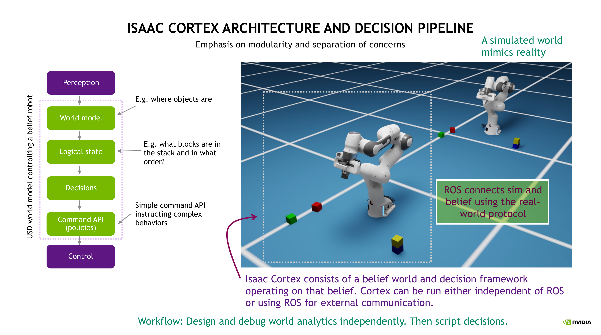
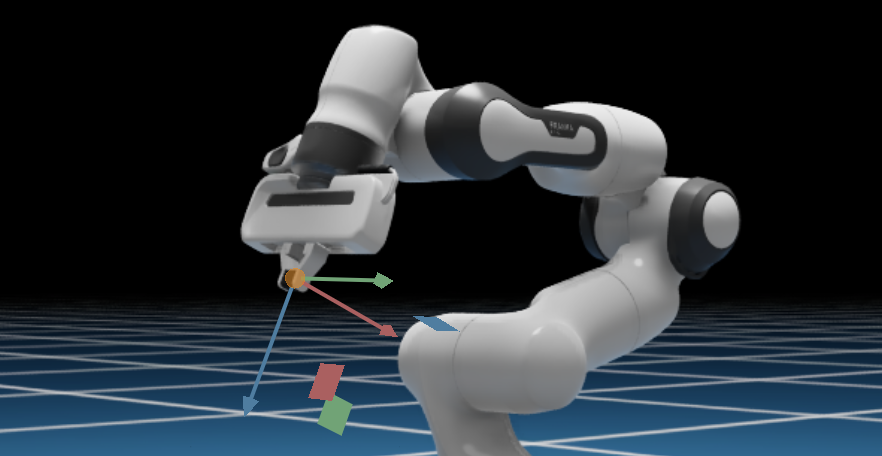

Isaac Cortex：概述#
警告
[已弃用]：Cortex 框架自 Isaac Sim 6.0.0 起已被弃用，并将在未来的版本中移除。 对于行为编程，请迁移到开源库，例如用于行为树的 py_trees 或 用于有限状态机的 transitions。 有关替代教程，请参阅 用于机器人行为的状态机。
Cortex 将 Isaac Sim 的机器人工具整合为一个连贯的协作机器人系统。协作机器人系统非常复杂，我们需要经过多次迭代才能将其完善。我们提供这些工具旨在展示我们的发展方向，并让您提前了解我们正在开发的行为编程模型。
教程序列#
Cortex 教程从核心概念概述（本教程）开始，随后逐步介绍一系列复杂度递增的示例。
建议按顺序逐步学习这些教程。
有关更多信息，请参阅 Nathan Ratliff 的 Isaac Cortex GTC22 演讲
Cortex 概述#
工业机器人通过利用其速度和重复性来执行生产性工作。集成商围绕机器人构建工作环境，使高度脚本化的行为成为工作单元和装配线中有用的组成部分。但是，这些机器人通常仅被编程为执行关节运动，并且通常对其周围环境没有感知。这使得它们易于编写脚本，但也使得在其周围极其不安全。这些高速移动的危险机器通常被安置在安全笼中，以将其与人类工人隔离。
协作机器人系统有着根本的不同。这些机器人旨在与人类近距离协作，无需安全笼，处理那些需要比当前脚本化工业机器人所能解决的更高智能和灵巧性的长尾问题。它们需要具有内在的反应性，并能快速适应其周围环境（尤其是当附近有人类同事时）。但与此同时，我们需要它们保持易于编程，因为它们的价值在于能够支持多样化的应用。Cortex 是一个构建在 Isaac Sim 之上的框架，旨在解决这些问题。Cortex 的目标是让开发智能协作机器人系统像游戏开发一样简单。
协作机器人系统通常包含感知模块，这些信息会流入世界模型，而机器人必须决定在任何给定时刻执行哪些技能，以推进任务的完成。通常有许多技能可供选择。机器人必须决定何时拾取物体、何时开门、何时按下按钮，以及最终哪些技能或技能序列最适合完成这些步骤。因此，我们面临着一个问题：如何将可用的策略和控制器组织成一个易于访问的 API，并实现对这些决策的直观编程。此外，我们希望以一种方式来实现这一点，使用户能够先在仿真中进行开发，然后直接连接到感知模块和真实机器人控制器，以控制物理机器人。
Cortex 流水线（详见下一节）的核心在于利用仿真器作为世界模型。Isaac Sim 基于 USD 提供了丰富的世界表示，并内置了 PhysX，因此该世界模型既是详细的状态信息数据库，又具备物理真实性。
为了在仿真和现实之间轻松切换，我们需要能够模块化地移除感知组件，并在开发过程中直接基于仿真中的真实值（ground truth）进行操作。我们还需要能够轻松地在仅控制仿真机器人和向外部机器人发送指令之间切换。此外，决策框架应将反应性作为一等公民（first class citizen）予以支持。如下所述，Cortex 天生支持所有这些要求。
高级说明
现代深度学习技术通常学习编码世界信息的抽象潜在空间，但这并不能消除对中央信息数据库的需求。我们距离能够作为整体解决方案在生产环境中部署的、足够稳健且透明的端到端训练系统仍有一段距离。在此之前，现实世界的系统将包含许多部分，包括感知模块和代表技能的多种策略，我们需要将这些部分编排成一个完整的系统。即使这些独立的部分各自受益于抽象潜在空间及其自身的感知流（例如，带有反馈的专用技能），它们仍然必须被组织成一个可编程的协调系统。Cortex 正是这些部分汇聚成完整系统的所在。
Cortex 流水线#


Cortex 围绕一个 6 阶段处理流水线构建，该流水线以 60Hz 的频率在每个周期步进（另见上图中的图示）：
感知： 感官流进入感知模块，并被处理为关于世界中存在什么以及这些对象位于何处的信息。
世界建模： 这些信息被写入我们的 USD 数据库。USD 代表我们的世界信念，捕获所有可用信息。重要的是，这个模型是可可视化的，从而提供了窥探机器人“思维”的窗口。
逻辑状态监控： 一组逻辑状态监控器监视世界并记录环境的当前逻辑状态。逻辑状态包括离散信息，例如门是打开还是关闭，或者特定物体当前是否在夹爪中。
决策制定：基于世界模型和逻辑状态，系统需要决定执行什么操作。可执行的操作由通过公开命令 API 提供的命令定义（参见下一项及下文）。决策模型的最基本形式是状态机。我们将状态机构建为一种新的分层决策数据结构，称为决策者网络（Decider Network），该结构基于 NVIDIA 在协作机器人系统编程领域多年的研究成果。
命令 API（策略）：行为由策略驱动，每个策略由一组参数控制。例如，具有碰撞避免功能的运动由复杂的运动生成算法控制，但通过运动命令进行参数化，这些命令指定目标末端执行器位姿以及末端执行器应沿其接近的方向。开发人员可以为可用策略公开自定义命令 API，以便决策层访问。
控制：最后，底层控制将内部机器人状态与物理机器人同步，以实现实时执行。
第 2 层至第 5 层（世界、逻辑、决策、命令）基于信念模型（即机器人“大脑”中运行的仿真）运行，并且可以完全在 Isaac Sim 核心 API 之上进行仿真，无需考虑物理（或仿真）现实。这允许先在仿真中设计复杂系统，首先专注于塑造系统行为，然后再连接到物理（或仿真）世界。随后，可以通过 ROS 添加感知模块以连接到世界模型，并再次通过 ROS 添加控制模块以连接到物理机器人。这两个阶段都可以（而且可以说应该）使用仿真感知和控制模块在仿真中进行测试。为此，我们可以使用完全独立的仿真模型，将合成传感器数据输入到实际运行的真实感知和控制模块中。这使我们能够调整噪声特性、延迟和其他现实世界伪影，从而在尝试物理世界之前，彻底分析和调试端到端系统。
这种将信念世界与仿真（或真实）世界分离的概念是 Cortex 的基础。Cortex 基于称为信念（即机器人的“大脑”）的仿真运行。可能还有一个单独的“外部”仿真也在运行，用于模拟真实世界。或者（就信念仿真而言，效果等同），信念可以与真实的物理世界并行运行。通常，我们将这两个世界描绘为一个机器人位于另一个机器人之前（见上图）：前面的机器人代表信念，后面的机器人代表现实仿真。
与 Cortex 关联的两个扩展如下：
Isaacsim.cortex.framework：此扩展处理 Cortex 框架和基类。isaacsim.cortex.behavior：此扩展处理使用框架构建的示例行为。
目前，Cortex 编程模型仅适用于独立 Python 应用工作流。
基本示例#
作为一个示例，假设你希望一个机械臂跟随一个漂浮的魔法球。在场景中，有机器人、球和一个摄像头。以下是每个周期中，6 个处理阶段如何映射到这个机器人问题和场景：
感知：从摄像头捕获图像，流式传输并处理为球的世界变换，通过 ROS 以
tf的形式流式传输到 Cortex。世界建模：世界在 USD 中进行建模。测量到的球的变换被记录，并供逻辑状态监视器和行为使用，这些监视器和行为选择何时以及以何种频率同步内部世界模型。
逻辑状态监视：使用监视器来确定机器人是否正在抓取球。如果机器人正在抓取球，则
has_ball状态设置为True，否则设置为False。决策：使用球的当前位置、机器人的当前状态以及
has_ball状态，在状态机中确定机器人应该做什么，是向球移动还是什么都不做。命令 API：如果机器人应该向球移动，则发送向球移动的命令。
控制：基于从命令 API 接收到的命令，通过 ROS 向真实机器人发送底层控制命令。
命令 API#
PhysX 使用广义坐标表示机器人，这种表示形式称为关节链（articulations）。在 Isaac Sim 中，我们将它们封装在 Articulation 类中，该类提供了一个用于控制关节链中关节的便捷 API。这些关节命令对应于底层控制命令。但通常 策略（policies） 会管理这些关节的子集以提供技能。例如，Franka 机械臂的关节链具有 9 个自由度，其中 7 个用于机械臂，另外两个手指各占 1 个自由度。然而，在物理机器人上，机械臂控制与夹爪控制是分开的，夹爪命令是离散的（以给定速度移动到指定位置，闭合直到手指感受到力）。
Cortex 提供了一个 Commander 抽象，它作用于关节链中关节的子集，并暴露了一个接口，用于向管理这些关节的策略发送更高级别的命令。在 Cortex 模型中，机器人是一个具有相关指挥官（commanders）集合的关节链，这些指挥官负责管理关节。例如，一个 CortexFranka 机器人拥有一个 MotionCommander，它封装了管理机械臂关节的 RMPflow 算法，以及一个管理手部关节的 FrankaGripper 指挥官。命令可以离散地发送，也可以在每个周期发送，指挥官会在每个周期将这些命令处理为底层关节命令。例如，对于 Franka，我们可以发送一个运动命令（带有接近方向的目标位姿），指挥官将逐步移动关节直到达到该目标。该目标可以在每个周期更改（以适应移动物体），或者仅设置一次；在这两种情况下，运动指挥官都会逐步将关节移动到最新的命令位置。
指挥器及其对应的命令共同构成了针对特定机器人暴露的 命令 API。例如，如果 robot 是一个 CortexFranka 对象，则上述两个指挥器分别作为 robot.arm（即 MotionCommander）和 robot.gripper（即 FrankaGripper）暴露出来，因此任何持有 robot 对象的用户都可以访问这些指挥器对象所暴露的命令 API。例如，我们可以调用 robot.arm.send(MotionCommand(target_pose)) 或其便捷方法 robot.arm.send_end_effector(target_pose) 来控制机械臂，也可以调用 robot.gripper.close() 等方法来控制夹爪。
关于最新命令和最新关节动作（底层关节命令）的信息会缓存在指挥器中，供 control 层中的模块访问，以便将这些命令转换为物理机器人的实际动作。
参见 isaacsim.cortex.framework/isaacsim/cortex/framework/robot.py 中的 CortexFranka，以了解这些工具如何协同工作的示例。
关于旋转矩阵计算的说明#
在许多示例中，特别是在 Walkthrough: Franka Block Stacking 和 Walkthrough: UR10 Bin Stacking 中逐步演示的完整示例中，我们会对末端执行器或方块的变换进行计算以确定目标。要理解这些代码块，请注意旋转矩阵可以解释为特定坐标系中的一个参考系。具体而言，旋转矩阵的每一列都是该参考系的一个轴。
当坐标轴具有语义含义时（例如末端执行器），这种表示方式非常便捷。Franka 的末端执行器坐标系如下图所示，其中 x、y 和 z 轴分别以红色、绿色和蓝色表示。


这些 x、y 和 z 轴作为世界坐标系中的向量，构成了末端执行器在世界坐标系中的旋转矩阵的列向量。
例如，我们可以获取末端执行器的旋转矩阵，并使用以下代码提取对应的轴：
import isaacsim.cortex.framework.math_util as math_util
R = robot.arm.get_fk_R()
ax, ay, az = math_util.unpack_R(R)
我们可以使用以下代码计算目标旋转矩阵，该矩阵使 z 轴指向下方，并保持 y 轴尽可能相似：
import numpy as np
# Start with a z-axis pointing down. Project the end-effector's y-axis orthogonal to it (and
# normalize). Then construct the x-axis as the cross product.
target_az = np.array([0.0, 0.0, -1.0])
target_ay = math_util.normalized(math_util.proj_orth(ay, target_az))
target_ax = np.cross(target_ay, target_az)
# Pack the axes into the columns of a rotation matrix.
target_R = math_util.pack_R(target_ax, target_ay, target_az)
这种类型的数学运算很常见，可以理解为对正交坐标系进行基本的几何操作。